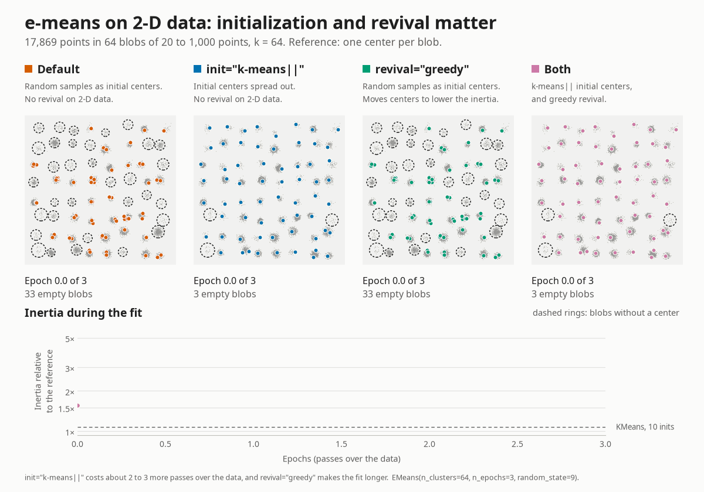
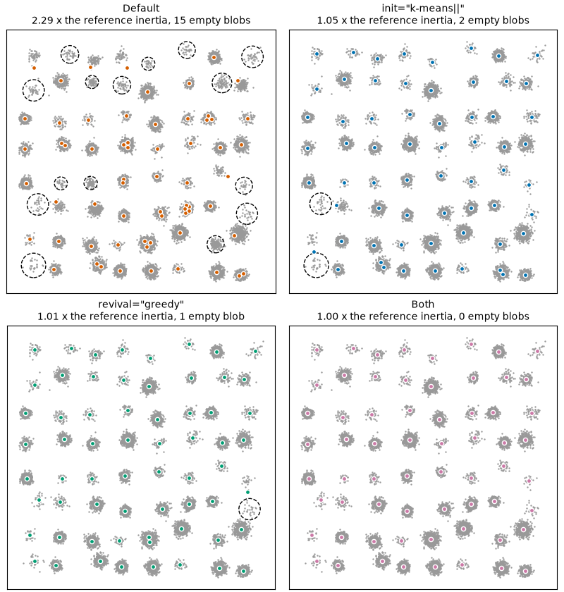
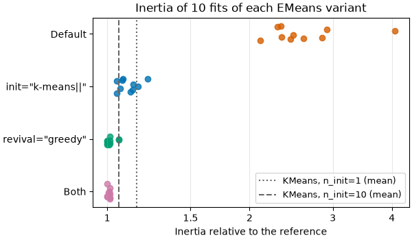

Note
Go to the end to download the full example code.
Initialization and revival on 2-D data#
E-means was mostly meant for embeddings: its authors report its results on
embedding datasets, where the defaults of EMeans,
random initial centers and the revival of the clusters below a tenth of the
mean weight, work well. On other real data, they don’t always reach a good
inertia, which is why EMeans has two more options:
init="k-means||": on data with many dense regions, the random initial centers put two centers in some regions and none in others. No cluster is dead, so the revival doesn’t move them, and more epochs don’t help: on a road network, the inertia ends 10-15% above the one from k-means|| initial centers.revival="greedy": on data that really has small clusters, the default revival keeps removing them. The inertia then ends 1-4% above the best one on YearPredictionMSD and Yolanda, and up to 2.5 times the best one on a credit card fraud dataset, whatever the number of epochs.
This example shows both options on 2-D blobs of very different sizes. On data
with 1 or 2 features, the default revival is off (in EMeans, and in the
reference implementation from the authors of the paper). With the default
init="random", the centers then stay in the regions where they start: several
in the dense regions, none in the sparse ones.

The animation shows the fits of this example step by step. It is made by
build_tools/make_init_revival_gif.py.
Generate the data#
We draw 64 Gaussian blobs, on a jittered 8 x 8 grid, of 20 to 1,000 points each, to be grouped in 64 clusters.
import numpy as np
from sklearn.datasets import make_blobs
rng = np.random.RandomState(3)
grid = np.array([(i, j) for i in range(8) for j in range(8)], dtype=float)
blob_centers = grid + rng.uniform(-0.25, 0.25, size=grid.shape)
blob_sizes = np.round(np.exp(rng.uniform(np.log(20), np.log(1_000), 64))).astype(int)
blob_stds = rng.uniform(0.07, 0.12, 64)
X, y = make_blobs(
n_samples=blob_sizes, centers=blob_centers, cluster_std=blob_stds, random_state=rng
)
n_clusters = 64
print(f"{X.shape[0]} samples")
17869 samples
The best clustering has one center in each blob. We take as reference the
inertia of KMeans started from the means of the
blobs, and compare the inertia of the fits to it.
from sklearn.cluster import KMeans
blob_means = np.array([X[y == i].mean(axis=0) for i in range(n_clusters)])
reference_inertia = KMeans(n_clusters, init=blob_means, n_init=1).fit(X).inertia_
Fit the four combinations#
We fit EMeans with 3 epochs and the four
combinations of init and revival:
the default:
init="random", and no revival since the data has 2 features;init="k-means||", which spreads out the initial centers;revival="greedy", which moves a center from one cluster to another when this is estimated to lower the inertia;both.
from sklearn_emeans import EMeans
n_epochs = 3
variants = {
"Default": dict(),
'init="k-means||"': dict(init="k-means||"),
'revival="greedy"': dict(revival="greedy"),
"Both": dict(init="k-means||", revival="greedy"),
}
estimators = {
name: EMeans(n_clusters, n_epochs=n_epochs, random_state=9, **params).fit(X)
for name, params in variants.items()
}
We plot the centers of each fit, with a dashed circle around the blobs that have no center, that is the blobs that are not the closest blob of any center.
import matplotlib.pyplot as plt
from sklearn.metrics import pairwise_distances_argmin
# Colors that remain distinct with a color vision deficiency.
colors = {
"Default": "#D55E00",
'init="k-means||"': "#0072B2",
'revival="greedy"': "#009E73",
"Both": "#CC79A7",
}
blob_radii = np.array([3 * X[y == i].std(axis=0).mean() for i in range(n_clusters)])
fig, axes = plt.subplots(2, 2, figsize=(8, 8.4), constrained_layout=True)
for ax, (name, estimator) in zip(axes.ravel(), estimators.items()):
centers = estimator.cluster_centers_
empty = np.setdiff1d(
np.arange(n_clusters), pairwise_distances_argmin(centers, blob_means)
)
ax.scatter(X[:, 0], X[:, 1], s=0.5, color="0.6", rasterized=True)
for i in empty:
ax.add_patch(
plt.Circle(blob_means[i], blob_radii[i], fill=False, linestyle="--")
)
ax.scatter(
centers[:, 0], centers[:, 1], s=20, color=colors[name], edgecolors="white"
)
ax.set_title(
f"{name}\n{estimator.inertia_ / reference_inertia:.2f} x the reference "
f"inertia, {len(empty)} empty blob{'s' if len(empty) != 1 else ''}",
fontsize=10,
)
ax.set_aspect("equal")
ax.set_xticks([])
ax.set_yticks([])
plt.show()

With the default parameters, the random initial centers are samples, so the large blobs get several of them and many small blobs get none. Without revival, nothing moves a center from a large blob to a far empty one, and the inertia ends more than twice the reference.
The reference implementation turns the default revival off on data with 1
or 2 features, because there, its rule makes the inertia grow. The rule
considers a cluster dead when its weight is below 0.1 times the mean weight.
On this data, the mini-batches have 128 samples: the smallest blobs get less
than 0.2 samples per mini-batch, against 2 on average, so their clusters are
found dead again and again, and their centers are moved to large blobs.
Forced on, with init="k-means||", this revival takes the inertia from about
1.1 to about 2.2 times the reference on average.
init="k-means||" samples the initial centers with probabilities
proportional to their squared distance to the centers so far, so the small
blobs far from the others get one. A few blobs remain empty.
revival="greedy" fixes the bad initialization during the fit: it moves the
centers of the blobs that have two of them to the empty blobs. From the
k-means|| initialization, there is less to fix: here, each blob ends with one
center.
In the animation at the top, the inertia jumps up after some greedy revivals. The cost of removing a cluster is estimated as if it were the only one removed, so a revival can remove both centers of a blob that has two, and leave the blob empty. The next revivals put a center back in it. Like the jumps of simulated annealing, these moves can help the fit escape a local minimum: after the next revivals, the inertia ends below where it was before the jump.
Repeat with other random states#
A single fit can be lucky or unlucky: we repeat the fits with 10 random
states, and compare with KMeans with its default
k-means++ initialization, with 1 and 10 initializations.
import time
random_states = range(10)
inertias, fit_times = {}, {}
for name, params in variants.items():
inertias[name], fit_times[name] = [], []
for random_state in random_states:
estimator = EMeans(
n_clusters, n_epochs=n_epochs, random_state=random_state, **params
)
tic = time.perf_counter()
estimator.fit(X)
fit_times[name].append(time.perf_counter() - tic)
inertias[name].append(estimator.inertia_ / reference_inertia)
kmeans_inertias = {
n_init: np.mean(
[
KMeans(n_clusters, n_init=n_init, random_state=random_state).fit(X).inertia_
for random_state in random_states
]
)
/ reference_inertia
for n_init in (1, 10)
}
fig, ax = plt.subplots(figsize=(6, 3.5), constrained_layout=True)
for position, name in enumerate(variants):
ax.scatter(
inertias[name],
np.full(len(random_states), position)
+ rng.uniform(-0.15, 0.15, len(random_states)),
color=colors[name],
alpha=0.8,
)
for n_init, linestyle in [(1, ":"), (10, "--")]:
ax.axvline(
kmeans_inertias[n_init],
color="0.4",
linestyle=linestyle,
label=f"KMeans, n_init={n_init} (mean)",
)
ax.set_xscale("log")
ax.set_xticks([1, 1.5, 2, 3, 4], ["1", "1.5", "2", "3", "4"])
ax.minorticks_off()
ax.set_yticks(range(len(variants)), list(variants))
ax.invert_yaxis()
ax.grid(axis="x", alpha=0.3)
ax.set_xlabel("Inertia relative to the reference")
ax.set_title("Inertia of 10 fits of each EMeans variant")
ax.legend(loc="lower right", fontsize=9)
plt.show()

The mean inertia and fit time of each variant:
Default relative inertia 2.638, fit time 6 ms
init="k-means||" relative inertia 1.108, fit time 11 ms
revival="greedy" relative inertia 1.016, fit time 12 ms
Both relative inertia 1.008, fit time 16 ms
On this data, init="k-means||" alone brings the inertia from 2 to 4 times
the reference to about 1.1 times, close to KMeans
with a single k-means++ initialization. revival="greedy" alone usually gets
within 2% of the reference, but up to 6%: it only moves centers during the
first half of the fit, 1.5 epochs here, which is not always enough to fix a
random initialization. With both, all the fits end within 1.5% of the
reference, below KMeans with 10 initializations.
Both make the fit longer: init="k-means||" costs about as much as 2 to 3
epochs, and revival="greedy" runs its estimates on a sample of the data.
revival="greedy" is experimental. See the documentation of revival in
EMeans for when to prefer it on data with more
features, where the default revival is on.
Total running time of the script: (0 minutes 8.770 seconds)